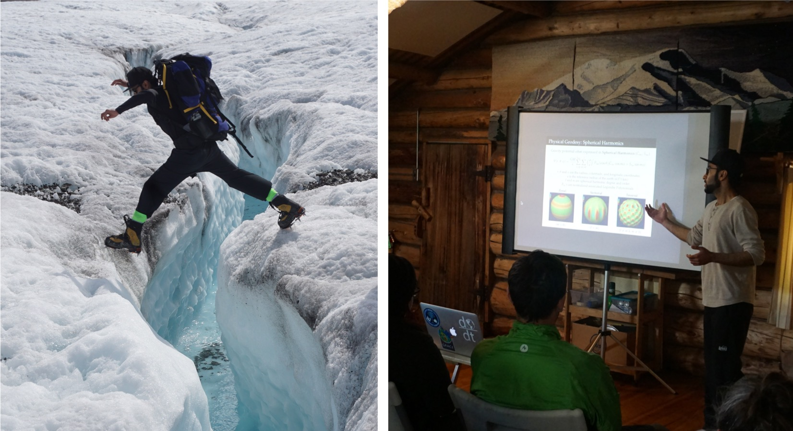

PhD candidate at the Velicogna Research Group
At the University of California, Irvine

Recent Highlights:
Recent work on the application of neural networks on satellite imagery for detection of glacier calving fronts. Mohajerani et al (2018) Preprint: [Link]
News coverage of our work on Totten and Moscow University glaciers in East Antarctica using regionally optimized GRACE mascons:
Mohajerani et al. (2018), Geophysical Research Letters: Mass Loss of Totten and Moscow University Glaciers, East Antarctica, Using Regionally Optimized GRACE Mascons: [Link]
WCRP Global Sea Level Budget Group [including Y. Mohajerani] (2018), Earth System Science Data: Global sea-level budget 1993-present: [Link]
IIMBIE Team [including Y. Mohajerani] (2018), Nature: Mass balance of the Antarctic Ice Sheet from 1992 to 2017: [Link]
About me
My research focuses on using satellite gravity and altimetry data to study changes in the Greenland and Antarctic ice sheets. I also apply machine learning techniques to satellite images to study changes in glacier calving fronts.
Global gravity anomalies measured by GRACE satellite (source: https://grace.jpl.nasa.gov/resources/6/)
I am a PhD candidate in the Velicogna Research Group in the Earth System Science Department at the University of California, Irvine.
My research focuses on using satellite gravity and altimetry data to study changes in the Greenland and Antarctic ice sheets.
You can hear more about one of my past projects on the regional optimization of GRACE (Gravity Recovery and Climate Experiment) harmonics in the following video. This work was also published in Geophysical Research Letters (link) :
As a part of my PhD I have also developed a machine learning toolkit for extracting glacier calving fronts from satellite imagery. While under review, the preprint of our work can be found here .
My undergraduate education was in physics and mathematics at the University of Toronto , where I did research in condensed matter physics and atmospheric physics.
I have extensive experience in research, scientific writing, and computational analysis. My computational expertise encompass scientific computing, parallel processing, and machine learning in Python, Github project management, and familiarity with R, Matlab, and Julia.
Research
I use GRACE (Gravity Recovery and Climate Experiment) spherical harmonic coefficients, which reveal how the geoid changes on a monthly basis, to obtain regionally-optimized time-series of mass change. I have also worked with laser altimetry data from ICESat and Operation IceBridge airborne missions (ATM and LVIS) to evaluate elevation change on the ice sheets. We also use regional and global climate models to further delve into the processes responsible for ice sheet mass change.
I have also developed a machine learning tooklit that extracts glacier calving front positions from satellite images with the use of Convolutional Neural Networks (CNNs) in order to monitor the calving fronts of many glaciers across the globe quickly and robustly.
Given the ongoing changes in the cryosphere and the dire consequences of ice sheet mass loss, such as rising sea levels that could potentially affect millions of people, is it more important than ever to combine a variety of observational techniques and models to monitor the ice sheets.
Feature 1
Feature 2
Feature 3
Feature 4
Feature 5
Feature 6
Mass balance trends on the Greenland (left) and Antarctic (right) ice sheets, in centimeters of equivalent water thickness per year. Trends obtained from a 36-month sliding window.
Neural Networks and Deep Learning with TensorFlow and Keras
Bayesian Stochastic Modelling in Stan and PyMC3, some familiarity with Edward
Bash, HPC, Cloud Computing
Project management with Git/Github
Familiarity with MATLAB, R, STELLA
Working with NetCDF files (CDO, NCO, Ncview)
Latex, Markdown, familiarity with HTML
Publication Highlights
Mohajerani et al. (2018) (IN REVIEW) Detection of Glacier Calving Margins with Convolutional Neural Networks: A Case Study. Preprints, 2018110529. DOI:10.20944/preprints201811.0529.v1
Mohajernai et al. (2018) Mass loss of Totten and Moscow University glaciers, East Antarctica, using regionally-optimized GRACE mascons. Geophysical Research Letters, DOI:10.1029/2018GL078173 [Link]
IMBIE Team [including Y. Mohajerani] "Mass balance of the Antarctic Ice Sheet from 1992 to 2017." Nature 556 (2018): pages219-222. [Link]
WCRP Global Sea Level Budget Group [including Y. Mohajerani]: Global sea-level budget 1993–present, Earth Syst. Sci. Data, 10, 1551-1590. (2018) [Link]
Kishore, P. et al. [including Y. Mohajerani] "Investigation of Kelvin wave periods during Hai-Tang typhoon using Empirical Mode Decomposition." Journal of Atmospheric and Solar-Terrestrial Physics 164 (2017): 192-202. [Link]
Teaching Experience
Instructor at the Data Science Initiative, UC Irvine: Developed short-course with Gregory Britton on spatial-temporal statistics in R and Python (2017) [Link]
Teaching Assistant, Earth System Science, UC Irvine: